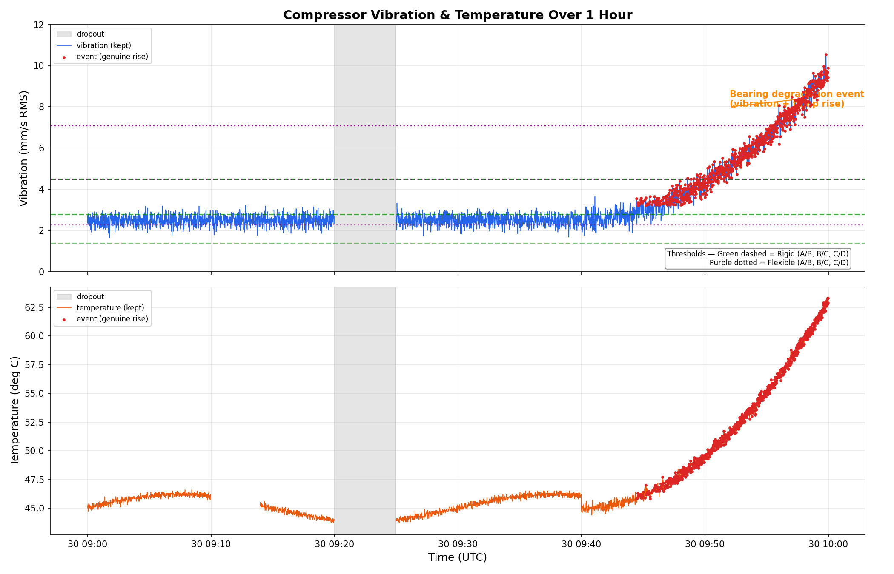

Embedded IoT Intern — Take-Home Assignment Overview
Medium machine, Group 2 (15-300 kW)
| Parameter | Sensor | Why | Mount | Calibrate |
|---|---|---|---|---|
| Discharge Pressure | WIKA A-10 (0-10 bar, 4-20mA, ±0.5%, IP65) | 4-20mA noise-immune; IP65 for dust; <$100 | ¼" NPT T-fitting into discharge port | Dead-weight tester at 0, 3.5, 7, 10 bar |
| Motor Bearing Vibration | PCB 356A15 IEPE + IFM RMS Converter | IEPE standard; RMS→4-20mA; magnetic mount; ISO 10816 | Magnetic base on DE bearing housing | Portable analyzer + shaker table |
| Motor Winding Temp | RTD Pt100 3-wire + IFM TA2531 | ±0.3°C stable; 3-wire compensates leads; <$50 | M12 thermowell in terminal box | Ice bath (0°C) + boiling water (100°C) |
| Air Flow / Load | SUTO S401 Thermal Mass (insertion) | Independent of P/T; hot-tap; detects unloaded run | ½" NPT hot-tap >10D downstream | Reference rotameter at 3 flow points |
| Oil Temperature | Omega K-Type + WIKA T32 | 400°C range; mineral sheath; vibration-resistant | ¼" NPT into oil sump drain plug | Contact thermometer + 100°C block |
Published as single-line JSON. Sequence numbers prove no message loss.
Classic Modbus word-order bug. Vendor documented standard big-endian but sensor outputs swapped.
Both sensors agree: mechanical degradation, not noise. Correlated rise = real fault.
I discovered the vendor's register map was wrong when the claimed big-endian word order produced physically impossible vibration values of ~10⁻²⁰ mm/s. I tested the alternative word order (40002 as high word, 40001 as low word) which produced ~2.37 mm/s — a realistic baseline for a running compressor. I kept the bearing degradation event starting at ~09:44:00 because both vibration and temperature rose together in a physically consistent way (vibration climbed from 2.8 to 9.9 mm/s while temperature rose from 46°C to 63°C), which is the signature of real bearing damage rather than sensor noise. I discarded the 48.0°C stuck readings at 09:10-09:14 because 240 identical consecutive values with zero variance is impossible for a real thermal process — a temperature sensor on a running compressor must show at least quantization noise. The 9999.0 vibration spikes were obvious sentinel values (hex 3C00 461C decodes to exactly 9999.0), and the 3275°C temperature readings (hex 7FEE = 32750 decimal) are clearly register overflow sentinels.

Generated by part_c/decode.py — shows vibration (with ISO 10816 zone lines) and temperature over the 1-hour period. Orange dots mark the real bearing degradation event that was kept.